Tracker
Trackerとは？
Trackerは最大11のエリアを設定し、それぞれのエリアの滞在時間や接触時間、移動軌跡を解析するソフトです。
エリアの設定はペイントソフトで色を塗るような感覚でできるので、とてもフレキシブルです。
※AVI形式の動画しか読み込めないので注意してください。もし他の形式で録画した動画を解析したい場合、トラブルシューティングを参考にして動画を変換してください。
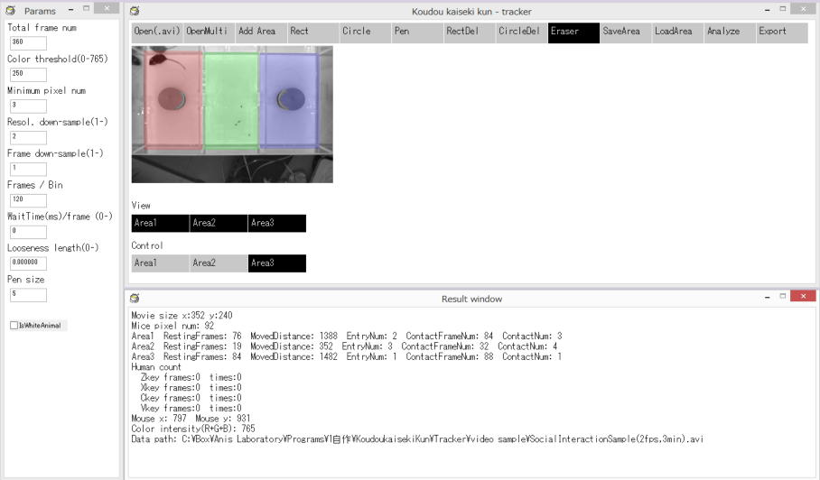
準備
AviRecorderで録画した動画の解析にはXvidが必要です。パッケージにXvidのインストーラーが入っているので前もってインストールしておいてください。
使い方
3部屋式社会的相互作用課題を例に説明します。
①行動解析君のTrackerフォルダにあるTracker2.12.exe（もしくは最新版）を起動します。
②解析する動画ファイルを開きます（サンプル動画がvideo sampleフィルダに入っています）。
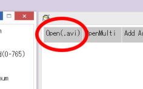
③左の部屋のエリアを塗るため矩形描画モードを選択。
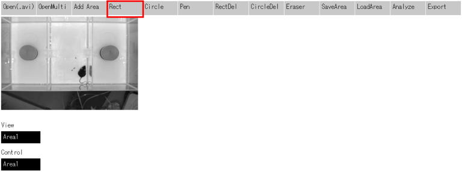
④ドラッグ&ドロップでエリアを塗ります。リアリングしてもトラッキングできるよう少し広めに塗ります。
色の付いたエリアが全てArea1になります。
もしエリアがはみ出てしまった場合はRectDel（矩形の範囲で削除）, CircleDel(円形の範囲で削除), Eraser(消しゴム)を用いて消してください。
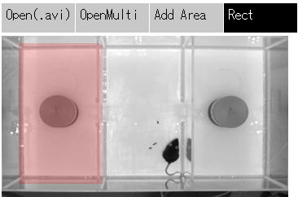
⑤次に中央の部屋のエリアを指定しましょう。Add Areaボタンを押してください。下に新たにArea2というボタンが表示されます。
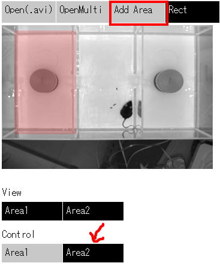
⑥Rectボタンを押し、中央の部屋に色を塗ります。
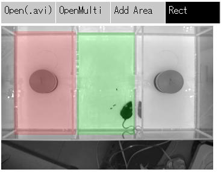
⑦再びAdd Areaを押して右の部屋も色を塗ります。
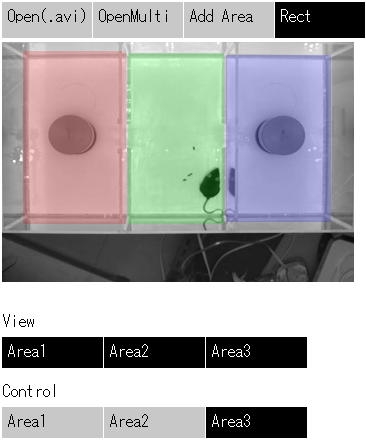
⑧このソフトでは背景が白い場合、黒い物体をマウス（背景が黒い場合はその逆）と見なしますが、このままだと左右の部屋にあるチャンバーの黒っぽい部分もマウスだと認識されてしまうため、チャンバーの黒っぽい部分と重なっているエリアを削除します。
まずは左の部屋から行きましょう。ControlのArea1を押してArea1を編集できるようにしてEraserボタンを押し、ツールでチャンバーの下部のエリアを消去します。
1 Area1を選択
2 Eraserを選択
3 黒っぽい部分のエリアを消す
※消しゴムのサイズは④で変えられます。またRectDelやCircleDelで消しても構いません。
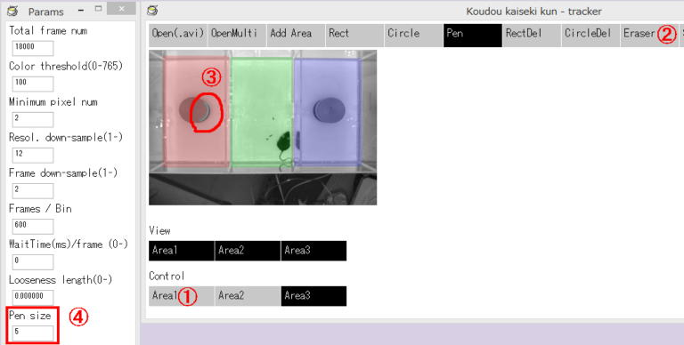
⑨同様に右の部屋のエリアも削除しましょう。Area3を選択してEraserで黒っぽい場所のエリアを消してください。
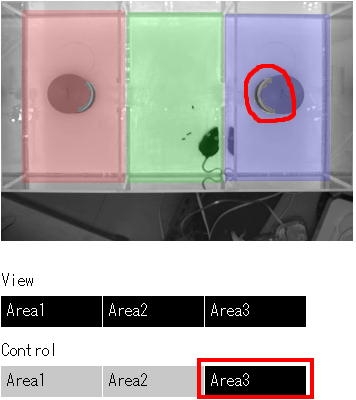
もしコンタクト(体の一部がエリアに接触する事。ここではチャンバーへのSniffingの検出として使用)も解析したい場合は⑩の操作を、不要であれば⑮へ飛んでください。
⑩マウスチャンバーのコンタクトゾーンを追加します。
まず見易くするため、ViewのArea1-3ボタンを全て押し、Area1-3を非表示にしてください。
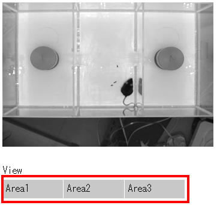
⑪Add Areaボタンを押しArea4を作成し、Circleツールでコンタクトゾーンを描画してください。
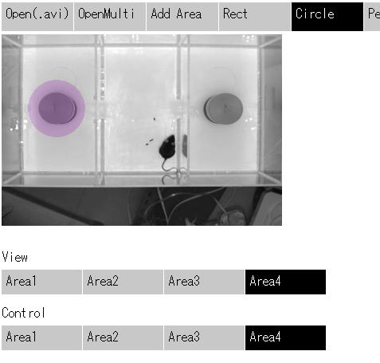
⑫Eraserでチャンバーの黒っぽい部分のエリアを削除してください。
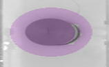
⑬右のコンタクトゾーンも描画します。
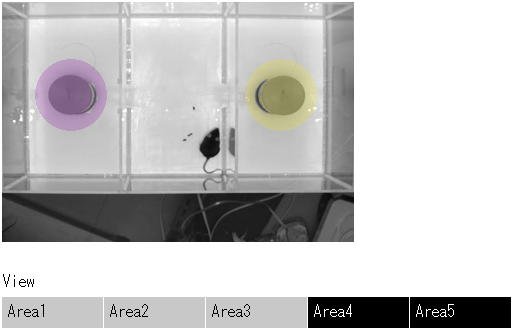
⑭全てのエリアを表示させて問題が無いか確認してください。
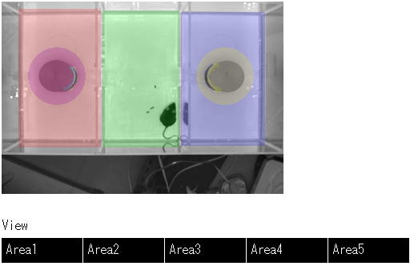
⑮最後に解析用のパラメータを入力しましょう。
Video FPS: 動画のフレームレート
Video length: 動画の長さ
Color threshold: 二値化する際の色閾値。値を小さくするほどマウスの検出感度が上がります。
Minimum pixel num: マウスが居ると見なす最低の検出ポイント数。黒い物体の検出ポイント数がこの数を下回ったらマウスをロストしたと見なします。
Resol. down-sample: サンプリングするピクセル密度をここで指定します。1だと動画の全ピクセルを解析し、値を大きくするほど解析密度が疎になり、解析が高速になりますます（例：2だと縦横共に2ピクセル毎に解析）。結果に影響が出ない範囲内で大きな値を入れる事をお勧めします。
Frame down-sample: 解析フレームを間引き頻度をここで指定します。1だと全フレームを解析し、5を入れると5フレーム毎に1フレームだけ解析します。フレームの間引きは無駄にフレームレートが高過ぎて、解析に時間が掛かり過ぎる場合に使えます。
BinDuration: Binあたりのフレーム数を指定します。
WaitTime/frame: 解析速度です。0にすると最速で解析しますが、もし解析中の様子をゆっくり観察したい場合は0より大きな値を入れてください。（例：1000を入れると1000ﾐﾘ秒につき1フレームづつ解析する）
Looseness length: ふらつき補正機能のパラメータです（※下記参照）。運動失調が無いマウスでは0にしてください。
Pen size: エリアを描く際に使うPenとEraserの大きさをここで設定できます。
IsWhiteAnimal: 白いマウスを解析する場合はチェックマークを入れてください。
Leave cursor when lose track: もしチェックが入っていないとプログラムが動物を見失った場合、最後に動物を検出した場所に動物が留まり続けていると見なします。もし明暗選択テストなどで動物が暗室に入り、検出できなくなった時間を測る必要がある場合にはチェックをオンにしてください。
Background noise filter: もし金属グリッド上の動物をトラッキングする際に金属グリッドをプログラムが誤検出してしまう場合、チェックをオンにしてください（オンにすると孤立した検出点を無視します。またこの機能を使う場合あまりResol down-sampleを強くし過ぎないでください）。
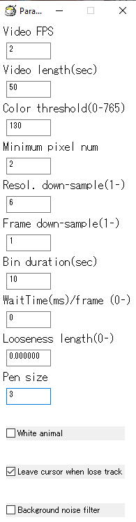
⑯最後にAnalyzeボタンを押せば解析が始まります。
このソフトはヒューマンカウントにも対応しており、解析中にZ,X,C,Vキーを押すとどのフレームでどのキーが押されたかが記録されます。
解析速度が早すぎる場合は解析パラメータのWaitTimeの値を大きくしてください。
解析が終わったらそのまま次の動画を開いて同様に解析してください。
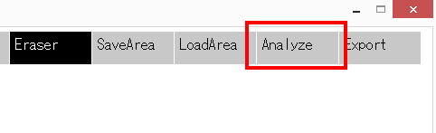
⑰解析が終わったらExportボタンを押して結果を出力してください。
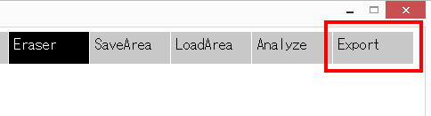
⑱出力をすると以下のファイルが生成されます。
*_Result.csv: Bin毎の滞在フレーム数、移動距離、侵入回数、接触フレーム数/回数（体の少なくとも一部がエリアに触れたか否か）、ヒューマンカウントボタンの押時間と回数
*_DistancePerFrame.csv: 各フレーム毎の移動量。複数の動画を解析した場合、結果は区切りなく追加されていくので注意してください。
*_RestingPerArea.csv: 各フレーム毎に動物がどこに滞在していたか、またどのヒューマンカウントボタンが押されていたかを示します。
*_CoordinatePerFrame.csv: 各フレームでの動物の座標
*.bmp: 移動軌跡の画像(動画が入っているフォルダに出力されます)
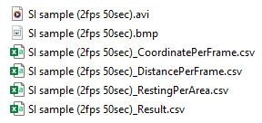
⑲設定したエリアはSaveAreaやLoadAreaで保存、読み出しができます。
※ ふらつき補正機能について
Cbln1KOマウスのような重篤な運動失調があるマウスでは同じ場所で体をフラフラさせることがあり、それにより実際に移動していないにも関わらず、移動したと見なされることがあり、それを補正する機能です。
アルゴリズムとしてはマウスの重心に錘の付いた紐を付けたと見なして、マウスの重心ではなく、錘の重心（緑の円）をトラッキングしています。
これにより同じ場所でフラフラしても移動距離には反映されなくなります。
Looseness lenghthはこの紐の長さの事です。錘がフラフラしても動かず、歩行したら動く丁度良い値を入れてください。
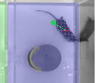